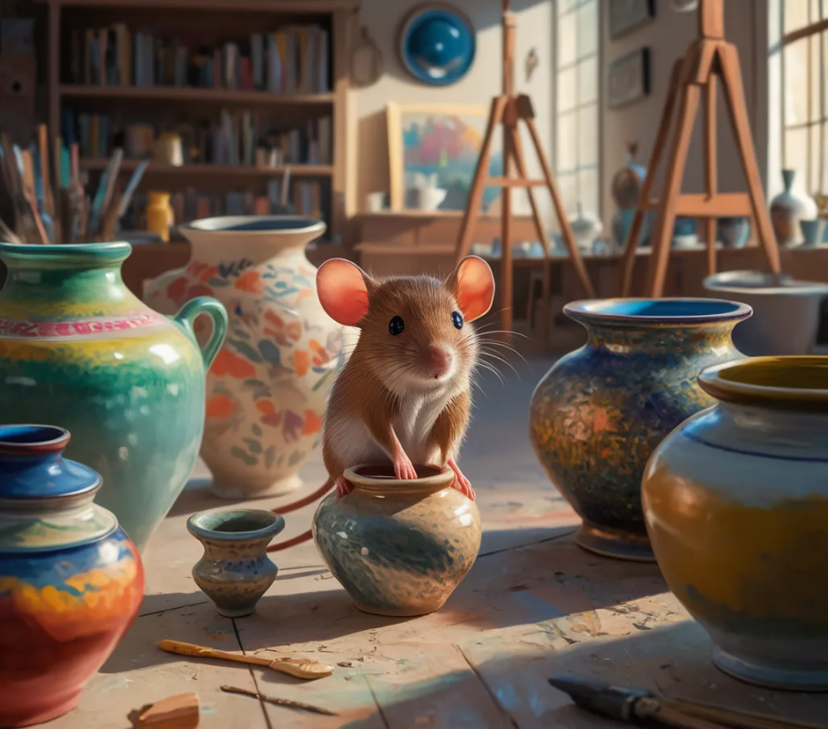

In a cozy little studio, a talented mouse named Whiskers has been honing his pottery skills for years. His tiny paws expertly shape the clay, creating unique and whimsical pieces that capture the essence of nature and the wonder of creativity.
The Pottery Mouse Project is a celebration of Whiskers' passion and dedication to his craft. Through this initiative, we aim to share his incredible work with the world and inspire others to embrace their creative pursuits, no matter how small or unconventional they may seem.
Each piece crafted by Whiskers is a true labor of love, imbued with his boundless imagination and attention to detail. From delicate vases adorned with intricate patterns to quirky mugs that bring a smile to your face, his creations are a testament to the beauty that can arise from the simplest of materials.
Join us on this delightful journey as we showcase Whiskers' remarkable talent and explore the joy of handmade pottery. Together, we can appreciate the magic that unfolds when art and nature intertwine, reminding us of the extraordinary possibilities that lie within even the most unexpected corners of our world.